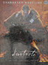

JV
-

Les jeux vidéo
À la recherche d'un monde meilleur
Jean-Paul Lafrance
-

Concevoir un jeux vidéo
Marc Albinet
-

Rogue leaders
The story of Lucasarts
Rob Smith / George Lucas
-
Pix'n Love n°16
Pix'n Love Editions
-

Pix'n Love n°19
Pix'n Love Editions
-

Développer des jeux vidéo avec Unity
Will Goldstone
-

CryENGINE 3 CookBook
Dan Tracy / Sean Tracy
-

Entre cinéma et jeux vidéo : L'interface-film
Marida Di Crosta
-

Push Start
Fronçois Houste
-

Les plans au cinéma
Jérémy Vineyard
-

Ray Tracing
(from the Ground Up)
Kevin Suffern
-

La 3D libre avec Blender
Olivier Saraja / Gaël Thomas
-

Edgeloop Charter Modeling
for 3D proffessionals Only
Kelly L. Murdock / Eric Allen
-

Mastering Technologie 1
Jason Busby / Zak Parrish
-

D'Artiste Character Modeling 2
Kevin Lanning / Zack Petroc / Timur Baysal